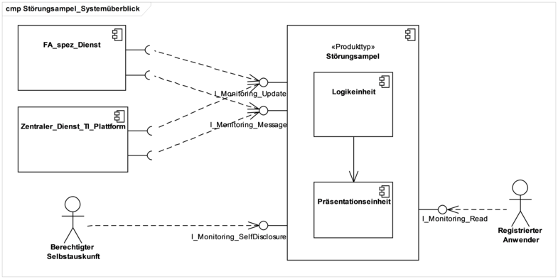
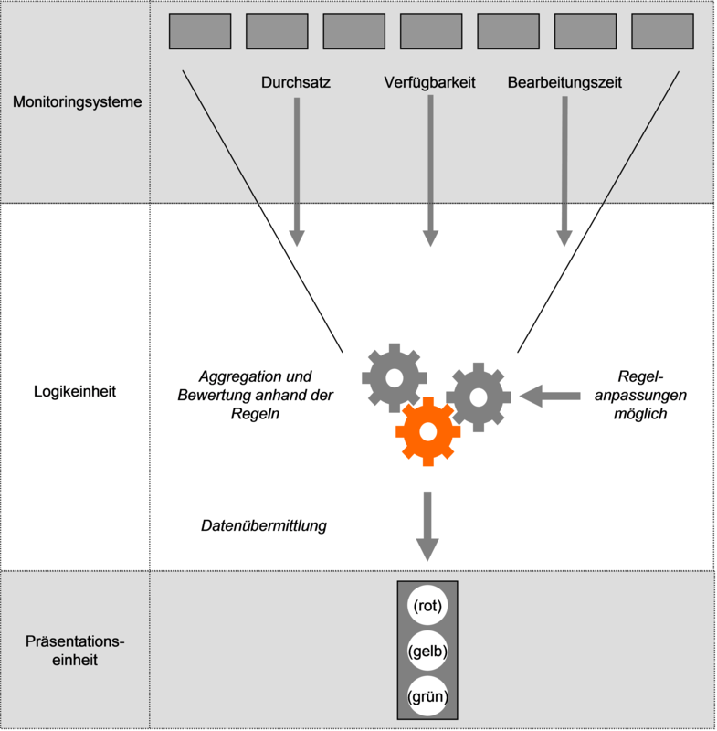
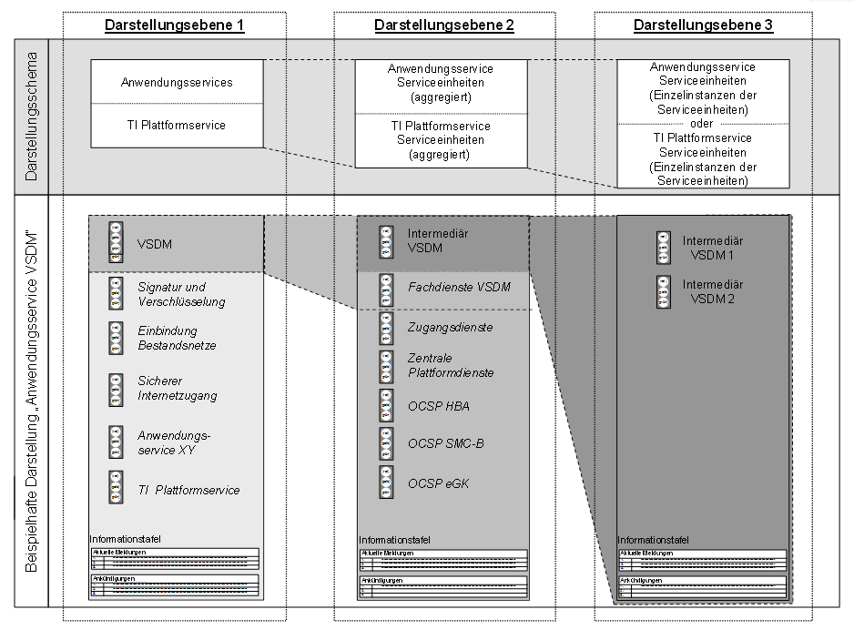
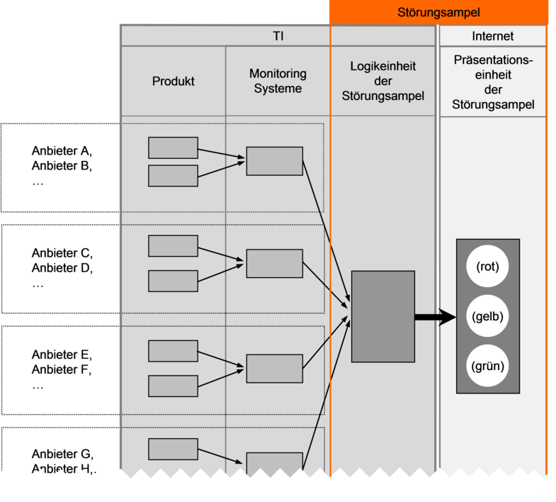
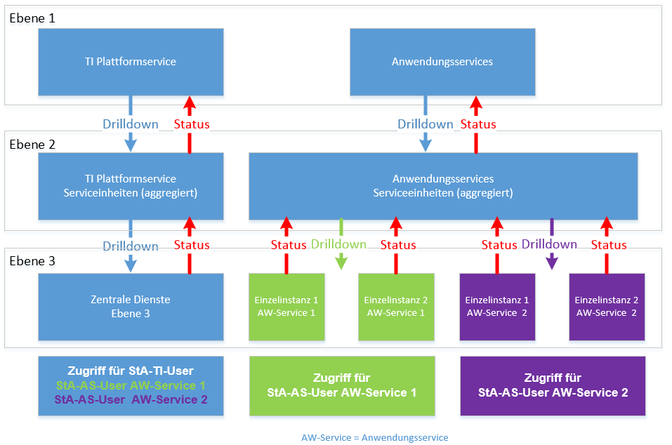
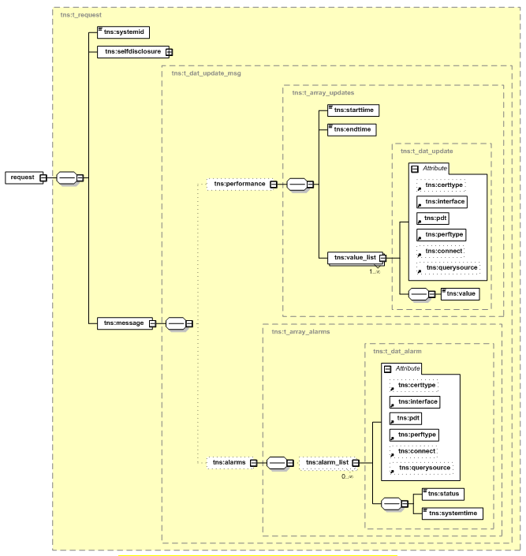
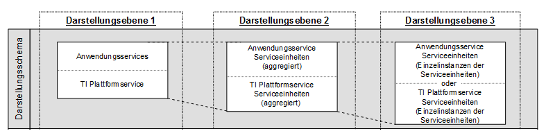
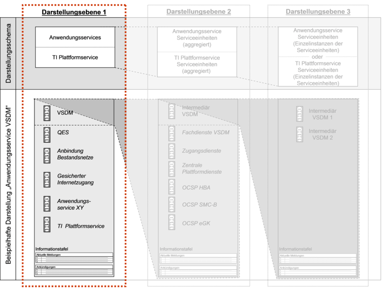
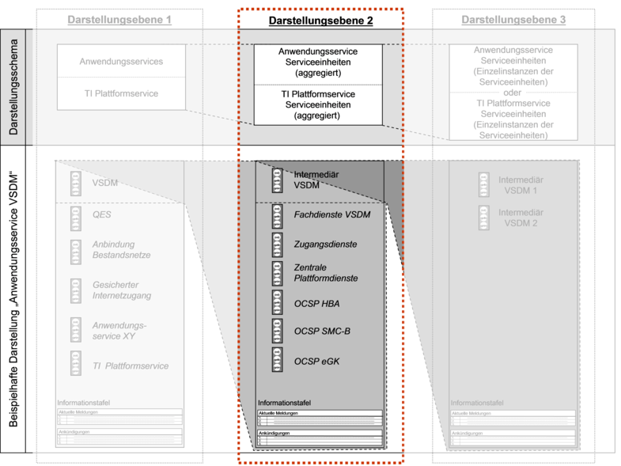
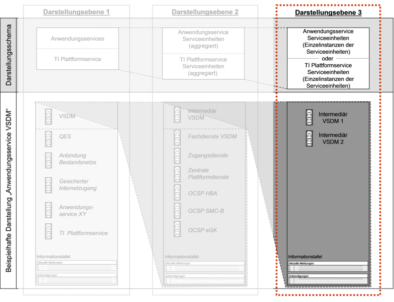

Elektronische Gesundheitskarte und Telematikinfrastruktur
Spezifikation
Störungsampel
| Version | 1.6.0 |
| Revision | 567556 |
| Stand | 14.05.2018 |
| Status | freigegeben |
| Klassifizierung | öffentlich |
| Referenzierung | gemSpec_St_Ampel |
Änderungen zur Vorversion
Änderungen zur Vorversion beruhen auf P15.2
Dokumentenhistorie
| Version |
Stand |
Kap./ Seite |
Grund der Änderung, besondere Hinweise |
Bearbeitung |
|---|---|---|---|---|
| 0.5.0 |
13.07.12 |
zur Abstimmung freigegeben |
PL P77 |
|
| 1.0.0 |
15.10.12 |
Überarbeitung nach Kommentierung und Workshop |
P77 |
|
| 1.1.0 |
12.11.12 |
Einarbeitung Kommentare aus der übergreifenden Konsistenzprüfung |
P77 |
|
| 1.2.0 |
06.06.13 |
Einarbeitung Kommentare von Gesellschaftern und der gematik |
P77 |
|
| 1.3.0 |
15.08.13 |
Einarbeitung lt. Änderungsliste vom 08.08.13 |
P77 |
|
| 1.4.0 |
24.08.16 |
Anpassungen zum Online-Produktivbetrieb (Stufe 1) Übernahme von ARV_706.3_Spec_SST_Störungsampel_Teil1_V1.4.1.doc und ARV_706.3_Spec_SST_Störungsampel_Teil2_V1.4.1.doc für OPB1 |
gematik |
|
| Einarbeitung Änderungsliste |
gematik |
|||
| 1.5.0 |
28.10.16 |
freigegeben |
gematik |
|
| P 15.2 |
gematik | |||
| 1.6.0 | 14.05.18 | freigegeben | gematik |
Die Störungsampel stellt den Betriebszustand der Telematikinfrastruktur und der Anwendungen der Gesundheitstelematik in kompakter Form dar. Die vorliegende Spezifikation definiert die Anforderungen zu Herstellung, Test und Betrieb der Störungsampel.
Das Dokument richtet sich an Hersteller und Anbieter der Störungsampel sowie Hersteller und Anbieter von Produkttypen, die hierzu eine Schnittstelle besitzen.
Dieses Dokument enthält normative Festlegungen zur Telematikinfrastruktur des deutschen Gesundheitswesens. Der Gültigkeitszeitraum der vorliegenden Version und deren Anwendung in Zulassungsverfahren wird durch die gematik GmbH in gesonderten Dokumenten (z. B. Dokumentenlandkarte, Produkttypsteckbrief, Leistungsbeschreibung) festgelegt und bekannt gegeben.
Schutzrechts-/Patentrechtshinweis
Die nachfolgende Spezifikation ist von der gematik allein unter technischen Gesichtspunkten erstellt worden. Im Einzelfall kann nicht ausgeschlossen werden, dass die Implementierung der Spezifikation in technische Schutzrechte Dritter eingreift. Es ist allein Sache des Anbieters oder Herstellers, durch geeignete Maßnahmen dafür Sorge zu tragen, dass von ihm aufgrund der Spezifikation angebotene Produkte und/oder Leistungen nicht gegen Schutzrechte Dritter verstoßen und sich ggf. die erforderlichen Erlaubnisse/Lizenzen von den betroffenen Schutzrechtsinhabern einzuholen. Die gematik GmbH übernimmt insofern keinerlei Gewährleistungen.
In diesem Dokument werden die von dem Produkttyp Störungsampel bereitgestellten (angebotenen) Schnittstellen spezifiziert. Benutzte Schnittstellen werden dagegen in der Spezifikation desjenigen Produkttypen beschrieben, der diese Schnittstelle bereitstellt. Auf das entsprechende Dokument wird referenziert.
Die vollständige Anforderungslage für den Produkttyp ergibt sich aus weiteren Konzept- und Spezifikationsdokumenten, diese sind in dem Produkttypsteckbrief des Produkttyps Störungsampel verzeichnet.
Detailspezifikationen zu den Monitoringdaten, d.h. zu den Ziel- und Messwerten für z. B. den Durchsatz, die Verfügbarkeit sowie für die Bearbeitungszeit sind in diesem Dokument nicht weiter dargestellt und der [gemSpec_Perf] für die TI Plattform und für die Fachdienste zu entnehmen. Im Rahmen der Selbstauskunft der Produktinstanzen zu erhebende Daten sind der [gemSpec_OM] zu entnehmen. Vorgaben zur Produktidentifikation sind ebenfalls [gemSpec_OM] zu entnehmen.
Weitergehende betriebliche Festlegungen sowie Details zu dem in diesem Dokument verwendeten Begriff „Serviceeinheiten“ sind [gemKPT_Betr_ORS1] zu entnehmen.
Anforderungen als Ausdruck normativer Festlegungen werden durch eine eindeutige ID in eckigen Klammern sowie die dem RFC 2119 [RFC2119] entsprechenden, in Großbuchstaben geschriebenen deutschen Schlüsselworte MUSS, DARF NICHT, SOLL, SOLL NICHT, KANN gekennzeichnet.
Sie werden im Dokument wie folgt dargestellt:
<AFO-ID> - <Titel der Afo>
Text / Beschreibung
[<=]
Dabei umfasst die Anforderung sämtliche innerhalb der Textmarken angeführten Inhalte.
Die Störungsampel ist das Informationssystem zur Darstellung des Betriebszustandes der Anwendungsservices und des TI-Plattform-Service sowie von deren Serviceeinheiten.
Die Störungsampel ist ein Produkttyp der TI-Plattform gemäß [gemKPT_Arch_TIP].
Die folgende Abbildung zeigt die von der Störungsampel bereitgestellten Schnittstellen und von welchen Akteuren diese genutzt werden.

Abbildung 1: Abb_Störungsampel_Außensicht
Die Schnittstellen I_Monitoring_Update (zur Anlieferung von Monitoringdaten), I_Monitoring_Message (zur Eintragung von Ankündigungen und Mitteilungen) und I_Monitoring_SelfDisclosure (Darstellung der Selbstauskunft der Dienste) sind aus dem zentralen Netz der TI-Plattform erreichbar. Die Schnittstelle I_Monitoring_Read (Darstellung des Status der Dienste der TI) kann über das Internet aufgerufen werden.
Nutzer der Störungsampel sind alle am Betrieb der TI Beteiligten, d. h.
Die Anwender (Versicherte/Leistungserbringer) haben niemals direkten Zugriff auf die Störungsampel.
Die Störungsampel dient allen am Betrieb der TI Beteiligten als betriebsunterstützendes System.
Die Störungsampel ist kein System zum Monitoring, zur Überwachung und zur Steuerung des laufenden Betriebs.
Voraussetzung für die ordnungsgemäße Funktionsfähigkeit der Störungsampel ist die Bereitstellung und Übermittlung von echtzeitnahen Informationen zum Betriebsstatus der Anwendungsservices und des TI-Plattform-Service sowie von deren Serviceeinheiten an die Störungsampel. Dabei gelten folgende Grundsätze:
Die Störungsampel besteht aus einer Logikeinheit und einer Präsentationseinheit.
Innerhalb der Logikeinheit werden
Für die Datenkonsolidierung in der Störungsampel werden die gelieferten Rohdaten mit den Zielwertvorgaben der [gemSpec_Perf] abgeglichen und entsprechende Ampeldarstellungen abgeleitet. Hierzu werden die von den angeschlossenen Monitoringsystemen gelieferten Messwerte anhand von Regeln, die sich an den in [gemSpec_Perf] festgelegten Sollwerten orientieren, in entsprechende Ampelphasen umgewandelt. Diese werden den Nutzern der Störungsampel angezeigt.
Die an die Störungsampel zu liefernden Rohdaten sind in GS-A_4147 Performance – Störungsampel - Performance Daten [gemSpec_Perf#GS-A_4147] je Schnittstelle beschrieben.
Die zu verarbeitenden Regeln (Regellogik) werden im Rahmen der Implementierung festgelegt und über die Administrationsschnittstelle der Logikeinheit durch den Anbieter der Störungsampel initial konfiguriert.

Abbildung 1: Störungsampel – Regellogik-Ampel
Innerhalb der Präsentationseinheit werden die aufbereiteten Informationen den Nutzern als Betriebsstatusinformation präsentiert. Die Darstellung der Informationen für den Servicenehmer der Störungsampel erfolgt in drei Darstellungsebenen (siehe auch Kap. 4.4):
Innerhalb jeder Darstellungsebene wird dem Nutzer der Störungsampel zusätzlich eine Informationstafel bereitgestellt. Diese enthält:

Abbildung 2: Störungsampel - Darstellungsebenen und beispielhafte Darstellung
Die Störungsampel verarbeitet und präsentiert sensible Informationen zum Betriebsstatus der TI, die ausschließlich dem in Kapitel 2.1 genannten Nutzerkreis zur Verfügung stehen sollen.
TIP1-A_5796
Die Störungsampel MUSS die Rechte der Anwender (Akteure) gemäß TAB_Störungsampel_Akteure_und_Rollen beschränken. <=
Tabelle 1: TAB_Störungsampel_Akteure_und_Rollen
| Schnittstelle |
Akteur |
Basis-Rolle |
Berechtigung / Beschreibung |
|---|---|---|---|
| I_Monitoring_Update (aus dem zentralen Netz der TI erreichbar) |
FA_spez_Dienst, Zentraler_Dienst_TI_ Plattform |
Keine Rolle |
Der Akteur sendet Monitoringdaten an die Störungsampel. Es erfolgt keine Authentisierung des Akteurs. |
| I_Monitoring_Message (aus dem zentralen Netz der TI erreichbar) |
FA_spez_Dienst, Zentraler_Dienst_TI_ Plattform |
StA-TI-Editor |
Der Akteur kann Mitteilungen und Ankündigungen für seinen Dienst bearbeiten. |
| I_Monitoring_Read (im Internet erreichbar) |
Registrierter Anwender (ohne Zusatzberechtigungen Anwendungsservices) |
StA-TI-User |
Der Akteur hat lesenden Zugriff auf die Präsentationseinheit (Sichtbar sind die Darstellungsebenen 1 und 2 der Anwendungsservices und alle Ebenen der TI-Plattformservices sowie Mitteilungen und Ankündigungen zu den sichtbaren Diensten). Der lesende Zugriff auf die Präsentationseinheit kann auf den Produktivbetrieb oder einzelne Erprobungen eingeschränkt werden. |
| Registrierter Anwender (mit Zusatzberechtigungen für einzelne Anwendungsservices) |
StA-AS-User |
Wie StA-TI-User Zusätzlich hat der Akteur lesenden Zugriff in der Präsentationseinheit auf die Darstellungsebene 3 des berechtigten Anwendungsservices inkl. Mitteilungen und Ankündigungen des Dienstes. Der lesende Zugriff auf die Präsentationseinheit kann auf den Produktivbetrieb oder einzelne Erprobungen eingeschränkt werden. |
|
| I_Monitoring_SelfDisclosure (aus dem zentralen Netz der TI erreichbar) |
Berechtigter Selbstauskunft |
StA-Report- Selbstauskunft |
Der Akteur kann sich die aktuellen Selbstauskunfts-Informationen aller Systeme der Störungsampel anzeigen lassen und als Report herunterladen. |

Abbildung 3: Störungsampel_Systemkontext
TIP1-A_5795
Die Störungsampel MUSS ermöglichen, dass Anwender eine User-ID und ein initiales Passwort zur Nutzung der Schnittstellen I_Monitoring_Message, I_Monitoring_SelfDisclosure und I_Monitoring_Read beantragen können.
Das Passwort muss durch den Anwender änderbar sein.
Die Schnittstelle darf nur nach erfolgreicher Authentisierung (d.h. nach Nutzen von User-ID und Passwort) genutzt werden können.
Jedem Anwender muss eine Rolle gemäß TAB_Störungsampel_Akteure_und_Rollen zugewiesen werden.
Für Anwender mit der Rolle StA-AS-User muss der berechtigte Anwendungsservice festgelegt werden. <=
Die folgende Abbildung zeigt beispielhaft die verschiedenen Ebenen der Störungsampel und die entsprechenden Drill-Down-Möglichkeiten von Anwendern der verschiedenen Rollen und Fachdienst-Zugehörigkeiten:

Abbildung 4: Berechtigungskonzept und DrillDown
Der blaue Bereich ist für alle Anwender (Rolle StA-TI-User) sichtbar.
TIP1-A_5797
Die Störungsampel MUSS die Schnittstellen gemäß Tabelle Tab_Störungsampel_Schnittstellen implementieren („bereitgestellte“ Schnittstellen) und nutzen („benötigte“ Schnittstellen).
Tabelle 2: Tab_Störungsampel_Schnittstellen
| Schnittstelle |
bereitgestellt / benötigt |
Bemerkung |
|---|---|---|
| I_Monitoring_Update |
bereitgestellt |
Definition in Abschnitt 4.1 |
| I_Monitoring_Message |
bereitgestellt |
Definition in Abschnitt 4.2 |
| I_Monitoring_SelfDisclosure |
bereitgestellt |
Definition in Abschnitt 4.3 |
| I_Monitoring_Read |
bereitgestellt |
Definition in Abschnitt 4.4 |
| I_IP_Transport |
benötigt |
Definition in [gemSpec_Net] |
| I_DNS_Name_Resolution |
benötigt |
Definition in [gemSpec_Net] |
| I_NTP_Time_Information |
benötigt |
Definition in [gemSpec_Net] |
TIP1-A_5798
Die Störungsampel MUSS die empfangenen Daten nach den Vorgaben des Gesamtverantwortlichen der TI (GTI) verarbeiten und darstellen.
Dies betrifft insbesondere
Abbildung 5: Abb_Störungsampel_Datenströme
TIP1-A_3521
Die Störungsampel MUSS die Schnittstellen I_Monitoring_Update, I_Monitoring_Message und I_Monitoring_SelfDisclosure im zentralen Netz der TI-Plattform anbieten. Die Schnittstelle I_Monitoring_Read muss im Internet erreichbar sein.
<=TIP1-A_3524
Die Störungsampel MUSS für die Kommunikation der Logikeinheit mit der Präsentationseinheit gemäß Abb_Störungsampel_Datenströme eine verschlüsselte sowie integritäts- und authentizitätsgeschützte Verbindung über ein Sicherheitsgateway gemäß [gemSpec_Net]#GS-A_4062 nutzen.
<=TIP1-A_3687
Die Störungsampel MUSS sicherstellen, dass die Außenschnittstellen IPv4 und IPv6 (Dual-Stack-Modus) unterstützen.
<=TIP1-A_3301
Der Anbieter der Störungsampel SOLL für die Störungsampel (sowohl für die Logikeinheit sowie für die Präsentationseinheit) Standardprodukte verwenden.
<=TIP1-A_3529
Der Anbieter der Störungsampel MUSS bei der Auswahl und Implementierung des Standardproduktes berücksichtigen, dass die Störungsampel den Versionszyklus des zugrundeliegenden Standardprodukts nachvollziehen muss und somit die Softwarewartung durch den Hersteller der Standardsoftware gegeben ist.
<=TIP1-A_3302
Die Störungsampel MUSS so implementiert werden, dass
für registrierte Anwender (I_Monitoring_Read) und zur Selbstauskunft berechtigte Anwender (I_Monitoring_SelfDisclosure) eine Rollenzuweisung
die Berechtigung der Sichtbarkeit der Ampeln in den Darstellungsebenen und für die Dienste auf Rollenebene
das Recht zur Bearbeitung von Meldungen und Ankündigungen für einzelne Dienste/Schnittstellen auf Rollenebene
die Strukturierung der Ampeln in den Darstellungsebenen
das Regelwerk zur Aggregation von Monitoringdaten und zur Propagation von Ampelstatus
konfigurierbar ist.
Die Konfigurationsdaten der Störungsampel müssen persistent gespeichert werden sowie exportierbar und importierbar sein.
<=TIP1-A_5917
Die Störungsampel MUSS sicherstellen, dass ein Anwender nur die Rechte nutzen kann, die ihm gemäß seiner Rolle zugeteilt sind.
<=TIP1-A_3531
Die Störungsampel MUSS den Nutzern der Störungsampel eine Nutzeroberfläche der Präsentationseinheit zur Verfügung stellen. Über die Nutzeroberfläche wird den autorisierten Nutzern der Zugriff auf die aufbereiteten Betriebsstatusinformationen ermöglicht.
<=TIP1-A_3532
Die Störungsampel MUSS mittels einer Authentifizierung sicherstellen, dass nur berechtigte Nutzer Zugriff auf die Nutzeroberfläche erhalten.
<=TIP1-A_3533
Der Anbieter der Störungsampel MUSS die Inhalte, Funktionen und deren Nutzung der Administrationsoberflächen der Logikeinheit und der Präsentationseinheit beschreiben.
<=TIP1-A_3538
Der Anbieter der Störungsampel MUSS die Inhalte, Funktionen und deren Nutzung für die Administrationsoberfläche der Logikeinheit (z. B. Administration des Regelwerks zur Datenkonsolidierung) beschreiben.
<=TIP1-A_3540
Die Störungsampel MUSS mittels einer Authentifizierung sicherstellen, dass nur berechtigte Nutzer die Konfiguration der Störungsampel ändern können.
<=TIP1-A_3541
Die Störungsampel KANN in einem marktüblichen Umfang anonymisierte Statistiken für die Zugriffe auf die Präsentationseinheit der Störungsampel implementieren.
<=TIP1-A_3304
Die Störungsampel MUSS alle, durch die autorisierten Nutzer (inklusive der Anwendungsadministratoren) der Logik- und Präsentationseinheit erfolgten Zugriffe und Einstellungsänderungen chronologisch in Form eines Auditlogs protokollieren und auswertbar zur Verfügung stellen.
<=Verfügbarkeits- und Durchsatzanforderungen für den Betrieb der Störungsampel sind in der [gemSpec_Perf] vorgegeben.
TIP1-A_3305
Die Störungsampel MUSS ermöglichen, dass die Speicherungsdauer für an die Logikeinheit der Störungsampel gelieferte Daten einstellbar ist.
Die Störungsampel MUSS als Ausgangswert für die Speicherungsdauer eine Woche als Standardwert setzen und die Verkürzung und Verlängerung der Speicherungsdauer ermöglichen.
Die Störungsampel MUSS als Ausgangswert für die Speicherungsdauer der vom Fachdienst VSDM gelieferten Daten 24h als Standardwert setzen und die Verkürzung und Verlängerung der Speicherungsdauer ermöglichen.
<=Die Werte für die Speicherungsdauer werden vom Gesamtverantwortlichen der TI (GTI) nach Bedarf festgelegt.
TIP1-A_3297
Der Anbieter der Störungsampel MUSS entsprechend des Schutzbedarfes der in der Störungsampel dargestellten und verarbeiteten Daten entsprechende Mechanismen zum Schutz vor unberechtigtem Zugriff etablieren.
<=TIP1-A_3298
Die Störungsampel MUSS ein nachvollziehbares Zugriffskonzept vorsehen, über das zu jeder Zeit für den Gesamtverantwortlichen der TI erkennbar ist welcher Nutzer welche Zugriffsberechtigungen hat. <=
TIP1-A_3299
Die Störungsampel DARF Gruppenberechtigungen NICHT vorsehen oder implementieren.
Aus der Berechtigung muss der einzelne Nutzer hervorgehen.
Es ist nicht zulässig dass mehrere Nutzer eine Nutzerkennung verwenden.
Ein anonymer Zugriff darf nicht möglich sein. <=
Diese Schnittstelle ermöglicht das Senden von Monitoringdaten der fachanwendungsspezifischen Dienste und der zentralen Dienste der TI-Plattform an die Störungsampel.
Die zu sendenden Daten sind in [gemSpec_Perf#Tab_gemSpec_Perf_Performance-Kenngroessen] festgelegt.
TIP1-A_5992
Die Störungsampel MUSS die Schnittstelle I_Monitoring_Update gemäß Tabelle Tab_Störungsampel_I_Monitoring_Update anbieten.
Tabelle 3: Tab_Störungsampel_I_Monitoring_Update
| Name |
I_Monitoring_Update |
|
|---|---|---|
| Version |
Webservice: v1.1 |
|
| Webservice Operationen |
Name |
Kurzbeschreibung |
| update |
Die Operation ermöglicht das Senden von Monitoringdaten an die Störungsampel. |
|
| WSDL |
I_Monitoring_Update10.wsdl Version: 1.1.0 TargetNamespace: http://ws.gematik.de/tel/stoerungsampel/wsdl/v1.1 |
|
| Schema |
I_Monitoring_Update10.xsd Version: 1.1.0 TargetNamespace: http://ws.gematik.de/tel/stoerungsampel/v1.1 ProductInformation.xsd Version: 1.1.0 TargetNamespace: http://ws.gematik.de/tel/version/ProductInformation/v1.1 TelematikError.xsd Version: 2.0.0 TargetNamespace: http://ws.gematik.de/tel/error/v2.0 |
|
| Webservice Zugangspunkt |
https://monitoring-update.stampel.telematik:8443/I_Monitoring_Update10 |
|
TIP1-A_5993
Die Störungsampel und Clients MÜSSEN die Schnittstelle I_Monitoring_Update, in ihrer jeweiligen Rolle Client bzw. Server, als SOAP-Webservice über HTTPS implementieren. Der Webservice wird durch die Dokumente I_Monitoring_Update10.wsdl und I_Monitoring_Update10.xsd sowie Tab_Störungsampel_SOAP-Request und Tab_Störungsampel_SOAP-Response definiert.
<=TIP1-A_5994
Der Anbieter der Störungsampel MUSS dem Anbieter des Clients der Schnittstelle I_Monitoring_Update eine eindeutige SystemID (zur Zuordnung der Monitoringdaten zur Instanz des Produkttyps) zuweisen, die der Client in den SOAP-Requests (tns:systemid) verwenden MUSS.
<=TIP1-A_5995
Der Anbieter des Clients der Schnittstelle I_Monitoring_Update MUSS dem Anbieter der Störungsampel die IP-Adressen mitteilen, von denen Daten an die Störungsampel gesendet werden.
Der Anbieter des Clients muss mit dem Anbieter der Störungsampel die gültigen Servicepunkte (Host, Port und URL) verifizieren.
<=In einer Nachricht können mehrere Performancewerte oder Auslastungswerte übertragen werden.
TIP1-A_5996
Der Client der Schnittstelle I_Monitoring_Update MUSS die in gemSpec_Perf geforderten Monitoringdaten innerhalb von 60 Sekunden nach Ablauf eines Reportzeitraumes an die Störungsampel übertragen haben. Eine Kennzeichnung des Report-Zeitraumes erfolgt durch eine Zeitbereichsangabe (Startzeit und Endzeit) in der übermittelten Nachricht.
<=Die Schnittstelle ist aus dem zentralen Netz der TI-Plattform erreichbar.
TIP1-A_6004
Die Störungsampel MUSS die Schnittstelle I_Monitoring_Update durch Verwendung von TLS mit serverseitiger Authentisierung sichern.
Die Störungsampel muss sich mit der Identität ID.ZD.TLS-S und der enthaltenen Admission-OID „oid_stamp“ gegenüber den nutzenden Systemen authentisieren.
<=TIP1-A_3272
Der Anbieter der Störungsampel MUSS die Voraussetzungen dafür schaffen, dass die in der [gemSpec_Perf] unter GS-A_4147 Performance - Störungsampel - Performance Daten festgelegten Daten und Informationen an die Logikeinheit der Störungsampel übermittelt werden können.
Hierfür sind durch den Anbieter der Störungsampel mindestens zu leisten:
Nutzung des zentralen Netzwerks der TI zur Übertragung der Daten,
Sicherstellung, dass alle Anbieter an die Störungsampel angebunden sind.
TIP1-A_6000
Die Störungsampel MUSS fehlerhafte Zugriffe auf die Webservice-Schnittstelle I_Monitoring_Update
auf HTTP-Ebene mit den Protokolleigenen HTTP-Fehlercodes
auf SOAP-Ebene mit gematik-SOAP-Fault gemäß [gemSpec_OM]
beantworten.
<=TIP1-A_6001
Die Störungsampel MUSS jeden akzeptierten SOAP-Request mit einem SOAP-Reply beantworten, der eine eindeutige Nachrichten-ID enthält, die als Referenz für Rückfragen beim Anbieter der Störungsampel genutzt werden kann.
<=TIP1-A_5998
Der Nutzer der Schnittstelle I_Monitoring_Update SOLL die Vertrauenswürdigkeit der Verbindung durch die Auswertung des Serverzertifikats überprüfen.
Die Prüfung SOLL gemäß gemSpec_PKI# TUC_PKI_018 mit
PolicyList: oid_zd_tls_s (gemäß gemSpec_OID)
KeyUsage: digitalSignature (Prüfung auf Vorhandensein des Bits)
ExtendedKeyUsages: serverAuth (1.3.6.1.5.5.7.3.1)
OCSP-Graceperiod: 0
Offlinemodus: nein
TOLERATE_OCSP_FAILURE: false
Prüfmodus: OCSP
erfolgen.
<=TIP1-A_5997
Der Nutzer der Schnittstelle I_Monitoring_Update MUSS beim Versenden von Verfügbarkeitsdaten im Alarm-Nachrichtenelement/Nachrichtenobjekt einen Zeitstempel übermitteln, der die Startzeit oder Endzeit des Alarms angibt.
<=TIP1-A_6003
Der Nutzer der Schnittstelle I_Monitoring_Update MUSS durch die Verwendung von Attributen gemäß Tab_Störungsampel_Attribute jede übermittelte Performance-Kenngröße und jeden übermittelten Alarm-Status-Wert eindeutig kennzeichnen.
Optionale Attribute dürfen nur verwendet werden, wenn sie zur eindeutigen Zuordnung benötigt werden.
<=Tabelle 4: Tab_Störungsampel_Attribute
| Attribut / Objekt |
Beschreibung |
|---|---|
| pdt |
Produkttyp-ID lt. [gemSpec_Perf] |
| perftype |
Performance-Kenngrößen-ID lt. [gemSpec_Perf] |
| interface |
Schnittstellenoperationen-ID lt. [gemSpec_Perf] |
| certtype |
Zertifkats-Typen-ID lt. [gemSpec_Perf] |
| querysource |
Aufrufquellen-ID lt. [gemSpec_Perf] |
| connect |
Eindeutige ID zur Identifikation bei Ende-Ende-Messungen im Netzwerk-Bereich |
Für die Übermittlung von Monitoringdaten wird der SOAP-Request der Operation update verwendet.
Die folgende Abbildung zeigt die Datenstruktur des SOAP-Requests.

Abbildung 1: Abb_Störungsampel_SOAP-Request
Tabelle 5: Tab_Störungsampel_SOAP-Request, Beschreibung der Elemente
| Element |
Beschreibung |
|---|---|
| tns:request |
definiert den SOAP-Request, der über die Operation update an die Störungsampel gesendet wird. |
| tns:systemid |
ermöglicht eine eindeutige Identifikation des sendenden Systems/Dienstes. Diese ID MUSS eindeutig sein und deren Vergabe erfolgt in Abstimmung zwischen dem Anbieter Störungsampel und dem Dienstanbieter. |
| tns:selfdisclosure |
enthält Informationen zur Selbstauskunft eines meldenden Systems, siehe [gemSpec_OM]. |
| tns:message |
beinhaltet die in gemSpec_Perf für den Dienst geforderten Verfügbarkeits-, Performance- und Auslastungsdaten. |
| tns:performance |
beinhaltet die in gemSpec_Perf für den Dienst geforderten Performance- und Auslastungsdaten. |
| tns:alarms |
beinhaltet die in gemSpec_Perf für den Dienst geforderten Verfügbarkeitsdaten. |
| tns:starttime, tns:endtime |
definieren das zugrundeliegende Zeitintervall für Performance- und Auslastungswerte. |
| tns:value_list |
enthält die Liste der Performance-Kenngrößen vom Typ t_dat_update. Dieses Element muss die folgenden Attribute enthalten. tns:interface: Schnittstellenoperationen-ID lt. [gemSpec_Perf] tns:pdt: Produkttyp-ID lt. [gemSpec_Perf] tns:perftype: Performance-Kenngrößen-ID lt. [gemSpec_Perf] Dieses Element kann die folgenden Attribute enthalten. tns:certtype: Zertifkats-Typen-ID lt. [gemSpec_Perf] tns:connect: Eindeutige ID zur Identifikation bei Ende-Ende-Messungen im Netzwerk-Bereich tns:querysource: Aufrufquellen-ID lt. [gemSpec_Perf] Mit einer SOAP-Nachricht können mehrere Werte für gleiche Zeitintervalle übergeben werden. |
| tns:value |
Wert der Performancekenngröße |
| tns:alarm_list |
enthält die Alarmstatus-Informationen. Dieses Element muss die folgenden Attribute enthalten. tns:interface: Schnittstellenoperationen-ID lt. [gemSpec_Perf] tns:pdt: Produkttyp-ID lt. [gemSpec_Perf] tns:perftype: Performance-Kenngrößen-ID lt. [gemSpec_Perf] Dieses Element kann die folgenden Attribute enthalten. tns:certtype: Zertifkats-Typen-ID lt. [gemSpec_Perf] tns:connect: Eindeutige ID zur Identifikation bei Ende-Ende-Messungen im Netzwerk-Bereich tns:querysource: Aufrufquellen-ID lt. [gemSpec_Perf] |
| tns:status |
enthält den Alarm-Status. open: Alarmstatus gesetzt close: Alarmstatus gelöscht warn: nicht benutzt grace: nicht genutzt |
| tns:systemtime |
Alarmzeit des sendenden Systems zur Erkennung von Inkonsistenzen (z.B. Alarme aus historischen Daten). |
Die Rückgabe enthält die Elemente gemäß Tab_Störungsampel_SOAP-Response.
Tabelle 6: Tab_Störungsampel_SOAP-Response, Beschreibung der Elemente
| Element |
Beschreibung |
|---|---|
| tns:request |
definiert die SOAP-Response, die als Antwort auf den SOAP-Request an den Nutzer gesendet wird. |
| tns:result |
beinhaltet Abnahmebestätigung der Nachricht. true | 1: Die Nachricht wurde von der Störungsampel angenommen und zur Analyse der Messwerte weitergeleitet. false | 0: Die Nachricht konnte nicht an das Auswertesystem weitergeleitet werden. |
| tns:id |
ermöglicht eine eindeutige Quittungs-ID für gesendete Nachricht (relevant für Fehleranalyse). |
| tns:selfdisclosure |
enthält Informationen zur Selbstauskunft der Störungsampel, siehe [gemSpec_OM]. |
Für den Fehlerfall ist das Nachrichtenelement err:Error (gematik-SOAP-Fault, definiert in Schemadatei TelematikError.xsd gemäß [gemSpec_OM]) verfügbar.
TIP1-A_5999
Der Nutzer der Schnittstelle I_Monitoring_Update MUSS beachten, dass Monitoringnachrichten die maximale HTTP-Nachrichtenlänge (Headerinformationen und Daten) von 16000 Bytes nicht überschritten wird. Größere Nachrichten werden verworfen.
<=Nachrichten mit fehlenden oder inkonsistenten Informationen werden akzeptiert, der Dateninhalt jedoch verworfen.
Das sendende System erhält als Rückmeldung eine Nachrichten-ID, die für Rückfragen beim Anbieter der Störungsampel als Referenz genutzt werden kann. Eine Referenzierung von übermittelten Nachrichten ist nur im Rahmen der genutzten Datenaufbewahrungsrichtlinie möglich.
TIP1-A_6002
Der Nutzer der Schnittstelle I_Monitoring_Update MUSS in jeder SOAP-Nachricht das Element selfdisclosure (Selbstauskunft) befüllen. Die Selbstauskunft basiert auf dem Schema [ProductInformation.xsd] gemäß [gemSpec_OM].
<=Über diese Schnittstelle können Anbieter von zentralen Diensten der TI-Plattform und Anbieter von fachanwendungsspezifischen Diensten Ankündigungen und Mitteilungen zu Ihren Diensten und Schnittstellen bearbeiten. Die Ankündigungen und Mitteilungen sind über die Schnittstelle I_Monitoring_Read für berechtigte Anwender einsehbar.
TIP1-A_6005
Die Störungsampel MUSS die Schnittstelle I_Monitoring_Message durch Verwendung von TLS mit serverseitiger Authentisierung sichern.
Die Störungsampel muss sich mit der Identität ID.ZD.TLS-S und der enthaltenen Admission-OID „oid_stamp“ gegenüber den nutzenden Systemen authentisieren.
<=TIP1-A_5935
Die Störungsampel MUSS die Schnittstelle I_Monitoring_Message zur Eingabe von dienst- und schnittstellenbezogenen Ankündigungen und Mitteilungen als REST-Schnittstelle bereitstellen.
Die Schnittstelle muss über den Endpunkt
https://monitoring-update.stampel.telematik:8443/I_Monitoring_Message
erreichbar sein.
<=TIP1-A_5936
Die Störungsampel MUSS die Schnittstelle I_Monitoring_Message so implementieren, dass Ankündigungen und Mitteilungen pro Ampel durch berechtigte Anwender erzeugt, gelesen, geändert und gelöscht werden können.
Ankündigungen und Mitteilungen müssen einen Startzeitpunkt (Beginn der Anzeige für Anwender der Schnittstelle I_Monitoring_Read) und einen Endzeitpunkt (Ende der Anzeige für Anwender der Schnittstelle I_Monitoring_Read) enthalten.
Die Anzeige der Ankündigungen und Mitteilungen muss in chronologischer Reihenfolge der Startzeitpunkte erfolgen.
<=Die Anwender müssen sich beim Anbieter der Störungsampel registrieren, bevor sie die erforderlichen Zugangsdaten erhalten und die Schnittstelle genutzt werden kann.
Diese Schnittstelle dient zur Abfrage der Selbstauskunfts-Informationen der fachanwendungsspezifischen Dienste der TI und der zentralen Dienste der TI-Plattform.
TIP1-A_5937
Die Störungsampel MUSS die Schnittstelle I_Monitoring_SelfDisclosure zur Abfrage von Selbstauskunfts-Informationen der fachanwendungsspezifischen Dienste der TI und der zentralen Dienste der TI-Plattform als REST-Schnittstelle bereitstellen.
Die Schnittstelle muss über den Endpunkt
https://monitoring-update.stampel.telematik:8443/I_Monitoring_SelfDisclosure
erreichbar sein.
<=Die Anwender müssen sich beim Anbieter der Störungsampel registrieren, bevor sie die erforderlichen Zugangsdaten erhalten und die Schnittstelle genutzt werden kann.
Diese Schnittstelle dient zur Abfrage des Status der fachanwendungsspezifischen Dienste und der zentralen Dienste der TI-Plattform. Die Statusinformationen werden in einer Baumansicht hierarchisch strukturiert und in einer Ampeldarstellung präsentiert.
TIP1-A_5941
Die Störungsampel MUSS die Schnittstelle I_Monitoring_Read zur Anzeige der Statusinformationen der Dienste der TI als Web-Schnittstelle bereitstellen.
Die Web-Schnittstelle muss über den Endpunkt
https://status.ti-dienste.de/I_Monitoring_Read
im Internet erreichbar sein.
Die Schnittstelle muss physikalisch getrennt von den anderen bereitgestellten Schnittstellen der Störungsampel gemäß Tab_Störungsampel_Schnittstellen in einer DMZ implementiert und vor unautorisierten Zugriffen aus dem Internet geschützt werden.
<=TIP1-A_5991
Die Störungsampel MUSS die Anwender der Schnittstelle I_Monitoring_Read über eine eindeutige Session-ID zuordnen.
Die Session-ID muss eine Checksumme aus den Daten Anwendername, Client-IP-Adresse und der aktuellen Anmeldezeit sein. Zur Bildung der Session-ID muss der Hash-Algorithmus SHA-256 oder besser verwendet werden.
<=TIP1-A_3527
Die Störungsampel MUSS den Zugriff der Anwender auf die Schnittstelle I_Monitoring_Read ausschließlich über eine TLS-Verbindung mit serverseitiger Authentifizierung ermöglichen.
Darstellungsebenen der Auswertung und erwartete Funktionen
Die nachfolgend angeführten Grafiken sind als Prinzipskizzen zu verstehen. Sie sollen verdeutlichen, welche Gliederung und welche Auswertung/Darstellung der Informationen erwartet werden. Kann der gewünschte Inhalt in anderer geeigneter Form als die beispielhaft gewählte Ampel so präsentiert werden, dass die gewünschten Informationen der Präsentation einfach zu entnehmen sind, ist auch eine andere formale Art der Präsentation der Daten möglich.
TIP1-A_3274
Die Störungsampel MUSS für die Präsentation der Daten über die Präsentationseinheit drei Darstellungsebenen vorsehen, in die zusätzlich jeweils die Informationstafel - bestehend aus Meldungen und Ankündigungen - integriert ist.
<=Die Ebenen gliedern sich in ihrer Drill-Down-Darstellung folgendermaßen:

Abbildung 6: Störungsampel - Schema der Darstellungsebenen
Für alle drei Ebenen gelten folgende Anforderungen
TIP1-A_3276
Die Störungsampel MUSS den aktuell zutreffenden Betriebsstatus für jedes betriebsrelevante Element der Darstellungsebene (bspw. Ebene 1 - für jeden Anwendungsservice und den TI-Plattform-Service) über eine Farbskala (bspw. grün, gelb, rot) anzeigen.
<=TIP1-A_3370
Der Anbieter der Störungsampel MUSS den Nutzern die Bedeutung der Farbskala gemäß den in diesem Dokument getroffenen Festlegungen für die Nutzung erläutern.
<=TIP1-A_3296
Die Störungsampel MUSS Statusänderungen (sowohl Meldungen als auch die Farbskala) selbständig aktualisieren, d. h. für eine Status-/Meldungsaktualisierung in der Präsentationseinheit darf kein aktiver Eingriff des Nutzers notwendig sein.
<=TIP1-A_3543
Die Störungsampel MUSS in Abhängigkeit von der Darstellungsebene zukünftige Anwendungsservices/ aggregierte Serviceeinheiten/ Einzelinstanzen der Serviceeinheiten aufnehmen, korrekt zuordnen und darstellen können.
<=TIP1-A_3278
Die Störungsampel MUSS sicherstellen, dass die Auswahl der Bereiche ‚Ankündigungen’ oder ‚Aktuelle Meldungen’ der Informationstafel - sofern diese eine eingeschränkte Darstellung der Inhalte haben - jeweils alle verfügbaren Inhalte der momentan angezeigten Darstellungsebene in einer chronologisch sortierten Historie öffnet.
<=TIP1-A_3284
Die Störungsampel MUSS sicherstellen, dass die Anzeige der ‚Aktuelle Meldungen’ stets chronologisch sortiert ist, wobei mit der jüngsten Meldung begonnen wird.
<=TIP1-A_3291
Die Störungsampel MUSS sicherstellen, dass die Anzeige der ‚Ankündigungen’ stets chronologisch sortiert ist, wobei mit der nächstgelegenen Ankündigung (d. h. mit Ankündigungen für das aktuelle Datum bzw. mit denen die am nächsten zum aktuellen Datum sind) begonnen wird.
<=TIP1-A_3368
Die Störungsampel MUSS sicherstellen, dass die Filterung der dargestellten Informationen nach vom Nutzer einstellbaren Kriterien erfolgen kann.
<=Die Darstellung innerhalb der einzelnen Ebenen und der entsprechenden Inhalte wird nachfolgend skizziert:
Darstellungsebene 1

Abbildung 7: Störungsampel - Darstellungsebene 1
TIP1-A_3275
Die Störungsampel MUSS in der Darstellungsebene 1 folgende Informationen darstellen:
alle darstellbaren Anwendungsservices,
den TI-Plattform-Service,
die Informationstafel.
TIP1-A_3277
Die Störungsampel MUSS sicherstellen, dass die Auswahl des farblichen (bspw. in der Ampel) betriebsrelevanten Elementes der aktuellen Darstellungsebene in die nachfolgende Ebene 2 führt.
<=Darstellungsebene 2

Abbildung 8: Störungsampel - Darstellungsebene 2
TIP1-A_3279
Die Störungsampel MUSS in der Darstellungsebene 2 die aggregierten Serviceeinheiten des ausgewählten Anwendungsservices bzw. des TI-Plattform-Service darstellen.
<=TIP1-A_3281
Die Störungsampel MUSS sicherstellen, dass die Auswahl des farblich (bspw. in der Ampel) betriebsrelevanten Elementes der aktuellen Darstellungsebene in die nachfolgende Ebene 3 führt.
<=TIP1-A_3283
Die Störungsampel MUSS einen Anwendungsservice ohne farbliche Darstellung anzeigen, sofern dieser Anwendungsservice keine Monitoringdaten zu liefern hat. Die Darstellung der Ebene 3 ist für diesen Anwendungsservice nicht darzustellen.
<=Darstellungsebene 3

Abbildung 9: Störungsampel - Darstellungsebene 3
TIP1-A_3285
In der Ebene 3 MUSS die Störungsampel die Einzelinstanzen der auf Ebene 2 ausgewählten Serviceeinheit des Anwendungsservices bzw. des TI-Plattform-Service darstellen.
<=Die Anwender müssen sich beim Anbieter der Störungsampel registrieren, bevor sie die erforderlichen Zugangsdaten erhalten und die Schnittstelle genutzt werden kann.
Neben dem Wirkbetrieb der Telematikinfrastruktur wird es Erprobungen für neue Funktionalitäten geben. Es muss davon ausgegangen werden, dass über einen gewissen Zeitraum zentrale Dienste der TI sowohl für Erprobungen als auch den Produktivbetrieb betrieben werden.
Alle zentralen Dienste der TI senden Monitoringdaten an die Störungsampel. Die Störungsampel stellt den Ampelstatus der zentralen Dienste entsprechend ihrer Zugehörigkeit zu einer Erprobung oder dem Produktivbetrieb in separaten Servicebäumen dar (getrennte Darstellung ab Ebene 1). Dabei können einzelne Dienste gleichzeitig zu mehreren Erprobungen und dem Produktivbetrieb gehören.
TIP1-A_6714
Die Störungsampel MUSS neben den Diensten des Produktivbetriebs auch die Dienste für Erprobungen darstellen. Für den Produktivbetrieb und für jede Erprobung muss ein eigener Servicebaum beginnend ab Ebene 1 dargestellt werden.
Die Zuordnung von Diensten zum Produktivbetrieb oder zu Erprobungen muss gemäß den Vorgaben des Gesamtverantwortlichen der TI (GTI) erfolgen. Ein Dienst kann gleichzeitig dem Produktivbetrieb und mehreren Erprobungen zugeordnet sein.
<=
TIP1-A_6715
Der Gesamtverantwortliche der TI (GTI) MUSS für die Darstellung in der Störungsampel den Beginn und das Ende von Erprobungen sowie die Zugehörigkeit von Diensten zum Produktivbetrieb oder zu Erprobungen festlegen und dem Anbieter der Störungsampel mit der Aufforderung zur Umsetzung in der Störungsampel mitteilen.
<=
| Kürzel |
Erläuterung |
|---|---|
| CSV |
Comma Separated Values |
| eGK |
elektronische Gesundheitskarte |
| FQDN |
Fully Qualified Domain Name |
| HBA |
Heilberufsausweis |
| SMC-B |
Security Module Card Typ B, |
| TI |
Telematikinfrastruktur |
| TLS |
Transport Layer Security |
| VSDM |
Versichertenstammdatenmanagement |
Das Glossar wird als eigenständiges Dokument (vgl. [gemGlossar]) zur Verfügung gestellt.
Die nachfolgende Tabelle enthält die Bezeichnung der in dem vorliegenden Dokument referenzierten Dokumente der gematik zur Telematikinfrastruktur. Der mit der vorliegenden Version korrelierende Entwicklungsstand dieser Konzepte und Spezifikationen wird pro Release in einer Dokumentenlandkarte definiert; Version und Stand der referenzierten Dokumente sind daher in der nachfolgenden Tabelle nicht aufgeführt. Deren zu diesem Dokument jeweils gültige Versionsnummern sind in der aktuellen, von der gematik veröffentlichten Dokumentenlandkarte enthalten, in der die vorliegende Version aufgeführt wird.
| [Quelle] |
Herausgeber: Titel |
|---|---|
| [gemGlossar] |
gematik: Glossar der Telematikinfrastruktur |
| [gemKPT_Arch_TIP] |
gematik: Konzept Architektur der TI-Plattform |
| [gemSpec_OM] |
gematik: Übergreifenden Spezifikation Operations und Maintenance |
| [gemSpec_Perf] |
gematik: Performancespezifikation TI-Plattform |
| [gemSpec_Net] |
gematik: Übergreifenden Spezifikation Netzwerk |
| [gemKPT_Betr] |
gematik: Spezifisches Betriebskonzept |
| [Quelle] |
Herausgeber (Erscheinungsdatum): Titel |
|---|---|
| [RFC2119] |
RFC 2119 (März 1997): Key words for use in RFCs to Indicate Requirement Levels S. Bradner http://tools.ietf.org/html/rfc2119 |